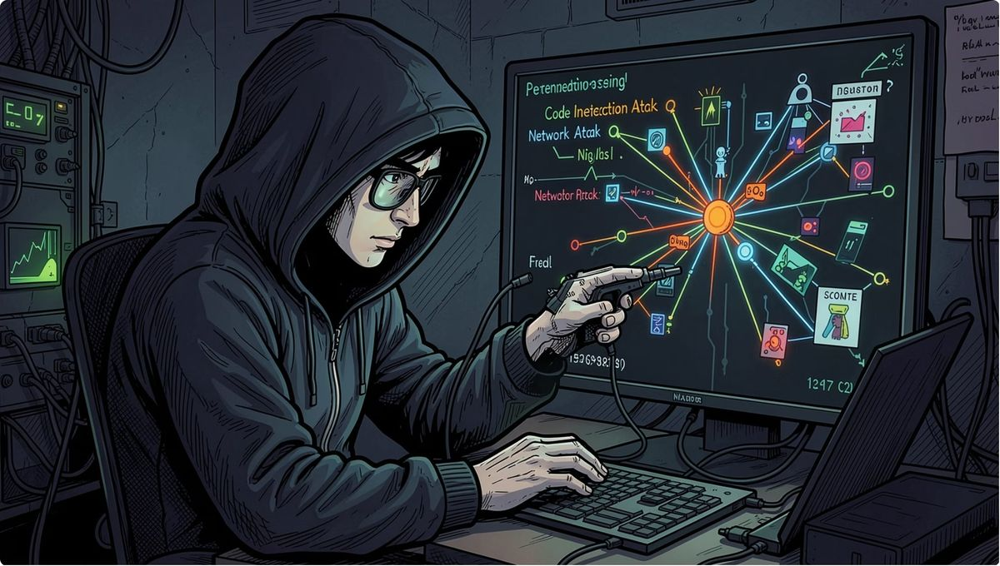

Air-gapping keeps the internet out — not the threats. ThreatIQ is a comprehensive internal defense layer for isolated and classified networks, combining vulnerability assessment, insider-threat analytics and compliance benchmarking in one appliance.

Modern ICT infrastructure is sourced globally — creating inherent exposure to supply-chain compromise. Vulnerabilities can be embedded in imported equipment and software long before they reach your network, and insider threats persist even inside fully air-gapped environments.
Traditional security tooling assumes an internet connection for updates, telemetry and scanning. Isolated networks are left with the highest stakes and the fewest defenses. ThreatIQ was built for exactly this gap.
Identify and prioritize weaknesses across all technology components — assessed independently, reported together with remediation guidance.
Detect anomalous or malicious insider activity before it escalates — eight behavioral criteria, over 1,000 specific event patterns.
Compare security configurations against CIS benchmarks and DISA STIG — gaps highlighted, alignment with international standards ensured.
ThreatIQ evaluates each layer of your stack on its own, then generates a consolidated report with remediation recommendations.
Detects viruses, ransomware and malicious software that bypassed preventive controls.
Flags flaws in third-party and custom software that could enable unauthorized access.
Evaluates outdated components, unpatched issues and configuration weaknesses.
Identifies SQL injection, XSS and common web threats per the OWASP Top Ten.
Monitors for data exfiltration, malware communications and unauthorized access attempts.
Port scanning and service analysis following NIST SP 800-115 methodology.
Insider activity is monitored across eight behavioral criteria, with over 1,000 specific event patterns enabling proactive anomaly detection — so security teams can respond before threats escalate.
ThreatIQ is an internal defense platform by Visionbotix designed for air-gapped and classified networks. It combines three capabilities in one appliance: vulnerability assessment across six technology layers, user behavior analytics for insider threat detection, and compliance benchmarking against CIS and DISA STIG standards.
ThreatIQ is built offline-first. It deploys as a dedicated hardware appliance inside the protected LAN with lightweight monitoring clients on each endpoint. All scanning, analytics and reporting run fully inside the air gap — nothing leaves the network.
Six layers, independently: malware exposure, third-party and custom software, operating systems, web applications (OWASP Top Ten), malicious network traffic, and services/ports per NIST SP 800-115 — then it generates a consolidated report with prioritized remediation. It also monitors user behavior across eight criteria with over 1,000 specific event patterns.
See ThreatIQ evaluate a representative environment and generate its consolidated security report — live.
Request a Demo